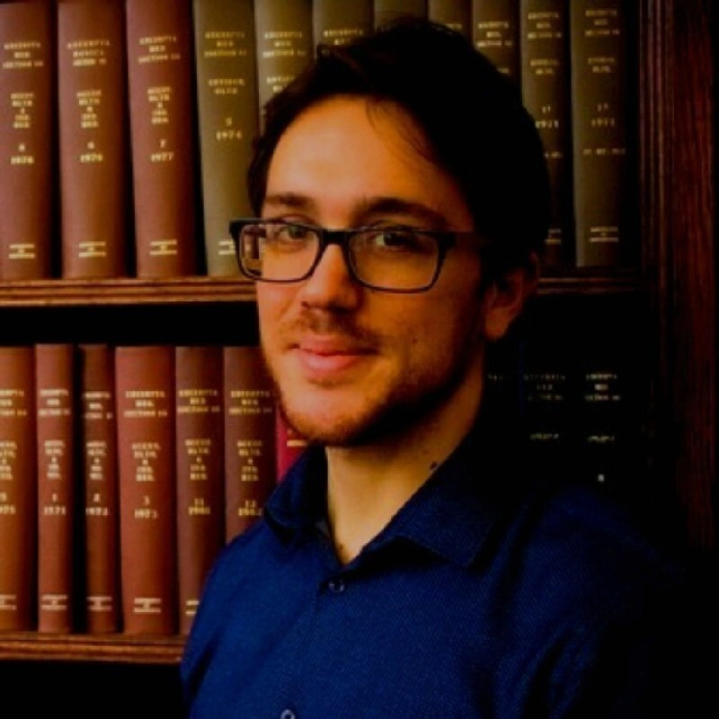

Fazl Barez
University of Oxford
Fazl is a Research Fellow at Torr Vision Group (TVG), University of Oxford, where he lead safety research. Additionally, he is a Research Advisor at Apart Research. He also holds affiliations with the Centre for the Study of Existential Risk at University of Cambridge and Future of Life Institute.
Previously, he worked as Technology and Security Policy Fellow at RAND, on Interpretability at Amazon and The DataLab, safe recommender systems at Huawei, and on building a finance tool for budget management for economic scenario forecasting at Natwest Group.
He recieved my PhD in AI from Edinburgh where he was currently a visiting scholar, collaborating closely with Shay Cohen.

Ahmad Beirami
Google Research
Ahmad Beirami is a research scientist at Google Research, co-leading a research team on building safe, helpful, and scalable generative language models. At Meta AI, he led research to power the next generation of virtual digital assistants with AR/VR capabilities through robust generative language modeling. At Electronic Arts, he led the AI agent research program for automated playtesting of video games and cooperative reinforcement learning. Before moving to industry in 2018, he held a joint postdoctoral fellow position at Harvard & MIT, focused on problems in the intersection of core machine learning and information theory. He is the recipient of the 2015 Sigma Xi Best PhD Thesis Award from Georgia Tech.

Tanmay Rajpurohit
Georgia Tech
Dr. Tanmay Rajpurohit is a techno-legal expert with a diverse range of expertise in multiple facets of the current AI ecosystem. He holds a Ph.D. in Aerospace Engineering (stochastic control), has lead a team of engineers to build AI-first products that set new industry standards and has also practiced as a trial attorney.

Myra Cheng
Stanford University
Myra is a PhD student in Computer Science at Stanford, advised by Dan Jurafsky. Grounded in critical theory and humanistic insights, my work aims to address algorithmic harms and social bias, as well as reveal the implicit norms that shape language models and other technologies. I am supported by the Knight-Hennessy Scholarship and the NSF Graduate Research Fellowship.
Previously, I studied computer science and history at Caltech, where I was advised by Yisong Yue, Joel Burdick, and Maura Dykstra. I also learned a lot from internships at Microsoft Research (with Adam Kalai) and DeepMind!
Leonardo Ranaldi
Idiap Research Institute
Leonardo Ranaldi got his Ph.D. in NLP at the University of Rome Tor Vergata. During his Ph.D. path, he explored in
depth the memorization and generalization abilities of neural Language Models. Actually, he is a Postdoctoral researcher at the Idiap Research Institute (Switzerland).
He has been working on analyzing the emergent abilities of Large Language Models in Mono- and Cross-lingual scenarios. In his recent work, he has studied the behavior of frontier LLMs in-depth via mechanistic interpretability techniques and symbolic reasoning. He has proposed alignment methods to elicit machine-machine and human-machine reasoning abilities.

Marco Valentino
Idiap Research Institute
Marco is a Postdoctoral Researcher at the Neuro-Symbolic AI Group at the Idiap Research Institute, Switzerland. His main research activity lies at the intersection of Natural Language Inference (NLI) and Explanation, contributing to the field of Explanation-Based NLI – i.e., the development of Artificial Intelligence (AI) models that can reason in complex domains and generate natural language explanations in support of their decisions. More specifically, his research attempts to inject explanatory knowledge into hybrid neuro-symbolic architectures to improve the generalization, robustness, efficiency and controllability of neural models (including Large Language Models) and to better understand the explanatory reasoning process in both humans and machines. Moreover, Marco is interested in developing systematic methodologies to interpret and uncover inference strategies and limitations of large black-box neural networks.

Fenia Christopoulou
Huawei Noah’s Ark Lab
Fenia is a Research Scientist at Huawei Noah’s Ark lab based in London, working on Natural Language Understanding.
Previously, Fenia was a postdoctoral researcher at the NaCTeM group of the University of Manchester, where she also obtained my PhD, advised by Prof. Sophia Ananiadou. During this time, I was also fortunate to work with Prof. Makoto Miwa. My research focused mainly on extracting relations between named entities within and across sentences in fully- and distantly-supervised settings.
She received my MEng and BSc in Electrical and Computer Engineering from the National Technical University of Athens. In her diploma thesis, she employed topic-oriented semantic models to assist sentence-level polarity detection, under the supervision of Prof. Alex Potamianos.
Simone Balloccu
Charles University
Computer scientist with 6+ years of experience in NLP & AI research. Simone was involved in several EU-funded projects, including Horizon 2020, ERC and EU Erasmus Traineeship. He mainly focuses on applying AI to mental health and behaviour change, and evaluating its safety and controllability. I have extensive experience on human evaluation of AI.
Currently, he is a postdoc at the Institute of Formal and Applied Linguistics (UFAL), at Charles University (CZ). He works within the ERC-funded “NG-NLG” project, covering controllability of neural approaches to text generation.
Prior to this, he worked on efficient healthcare communication as a Marie-Curie ESR at University of Aberdeen (UK), and on unsupervised NLP and business-oriented data mining at Università degli studi di Cagliari (IT).